Tecnológico Nacional de México (TECNM)
Instituto Tecnológico de Saltillo
Arquitectura de Computadoras
Karla Isabel Monsivais Arevalo - 22050641
Ing. Miguel Maldonado Leza

| Unidad 1 | Unidad 2 | Unidad 3 | Unidad 4 | Prácticas |
Existen diferentes modelos de arquitectura que definen cómo se organiza y procesa la información en una computadora:
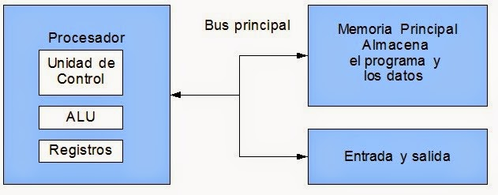
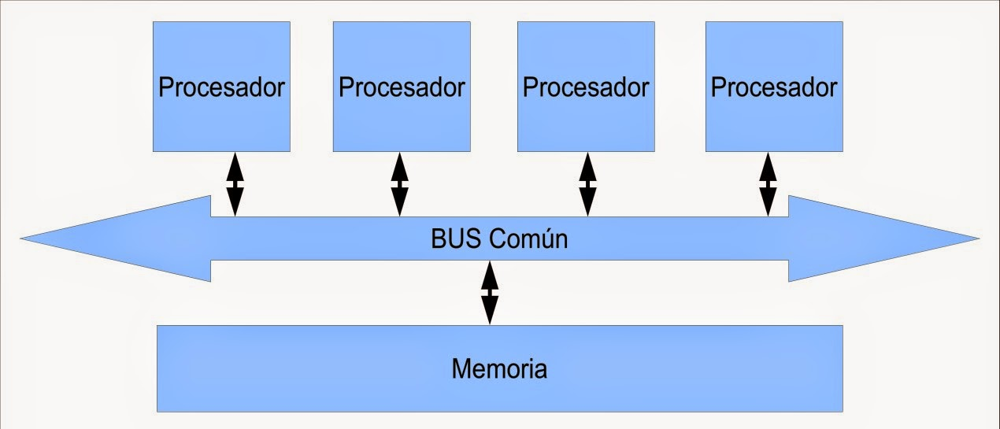
Los principales componentes de una computadora son:
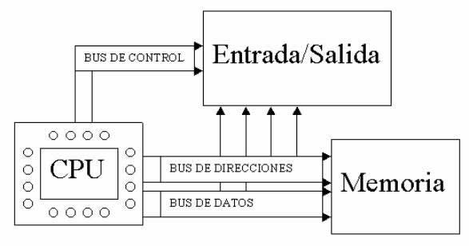
La memoria principal (RAM) almacena temporalmente datos e instrucciones en ejecución. La memoria caché acelera el acceso a información frecuente.
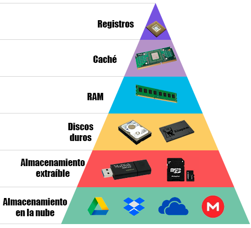
Existen diferentes métodos de comunicación entre CPU y periféricos:
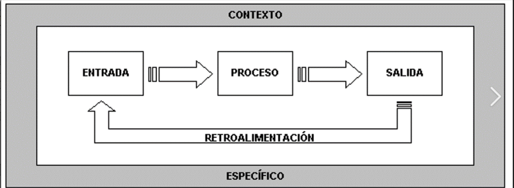
El DMA permite que dispositivos transfieran datos directamente a la memoria sin pasar por el CPU, liberando recursos y aumentando eficiencia.
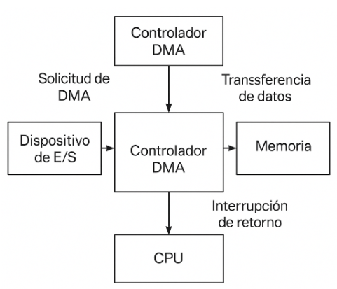
Los buses son canales de comunicación internos:
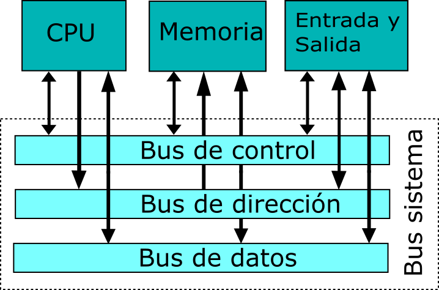
Las interrupciones permiten que el procesador atienda eventos externos o internos, deteniendo temporalmente la ejecución para responder al dispositivo.
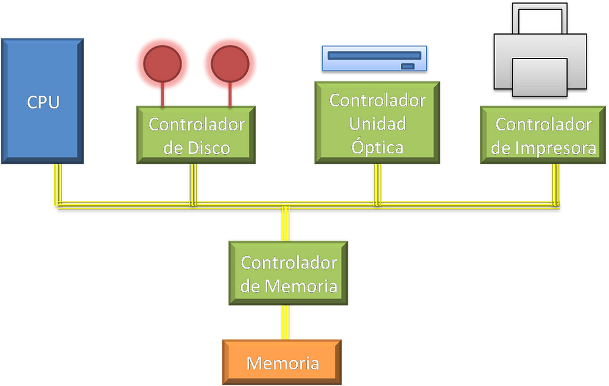
El procesador es el corazón del sistema. Se organiza en diferentes bloques funcionales: la Unidad de Control (UC), la Unidad Aritmética Lógica (ALU),
los registros y las interfaces con memoria y periféricos. Esta organización permite ejecutar instrucciones de manera ordenada y eficiente.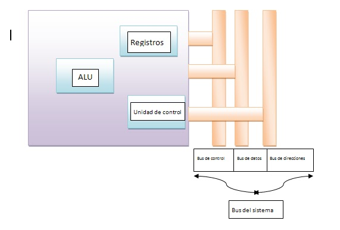
Los registros son pequeñas memorias internas del procesador que permiten almacenar datos temporales y direcciones. Se clasifican en:
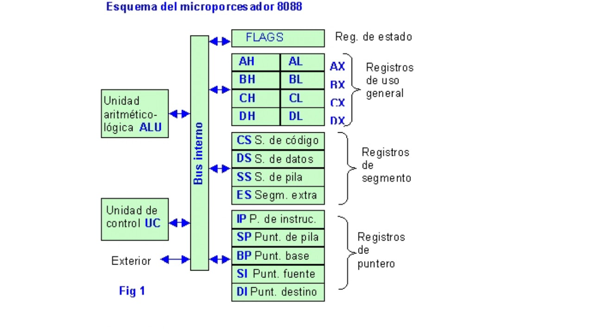
El ciclo de instrucción describe cómo el procesador ejecuta cada instrucción:
En procesadores modernos se utiliza segmentación (pipeline), que divide el ciclo en etapas paralelas para aumentar el rendimiento.
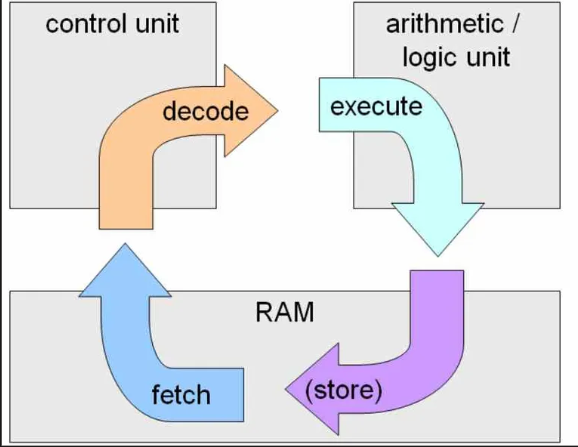
Los modos de direccionamiento indican cómo se localizan los datos en memoria. Algunos ejemplos son:
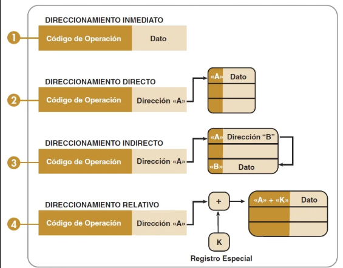
Ejemplos de procesadores reales:
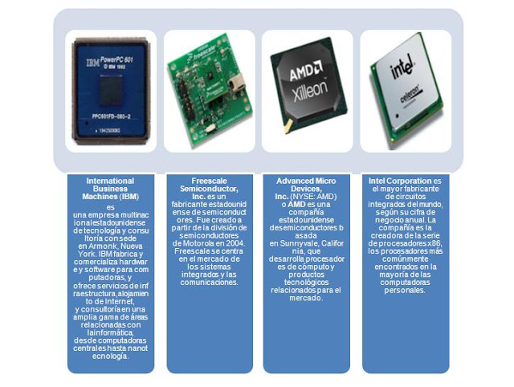
El chipset es un conjunto de circuitos integrados que permiten la comunicación entre el procesador, la memoria y los dispositivos periféricos. Es esencial porque coordina cómo interactúan todos los elementos del sistema, asegurando que trabajen de manera eficiente y sincronizada.
La CPU es el núcleo del sistema. Se encarga de interpretar y ejecutar instrucciones, realizar cálculos y coordinar el flujo de datos. Está compuesta por la ALU (Unidad Aritmética Lógica), que realiza operaciones matemáticas y lógicas; la Unidad de Control, que dirige el funcionamiento del procesador; y los registros, que almacenan datos temporales. Sin la CPU, el sistema no podría procesar información.
El controlador del bus regula el tráfico de información entre CPU, memoria y periféricos. Funciona como un puente que organiza el paso de datos, evitando conflictos y asegurando que cada componente reciba la información correcta. Es clave para que el sistema pueda comunicarse de manera ordenada.
Las puertas de E/S son interfaces que permiten la comunicación entre la computadora y el mundo exterior. A través de ellas se conectan periféricos como teclado, ratón, impresora y monitor. Estas puertas convierten las señales externas en datos que el sistema puede procesar y viceversa.
Este controlador administra las señales que requieren atención inmediata del procesador. Por ejemplo, cuando presionamos una tecla, se genera una interrupción que detiene momentáneamente la ejecución normal para atender el evento. Esto garantiza que el sistema responda rápidamente a las acciones del usuario o a eventos de hardware.
El DMA permite que ciertos dispositivos transfieran datos directamente a la memoria sin necesidad de que el CPU intervenga en cada paso. Esto libera al procesador de tareas repetitivas y mejora la eficiencia del sistema, especialmente en operaciones de gran volumen de datos como transferencias de disco.
Los circuitos de temporización generan señales de reloj que sincronizan todas las operaciones internas. Cada instrucción y cada transferencia de datos ocurre en un pulso determinado, lo que asegura que los procesos se ejecuten en el orden correcto y sin errores.
Estos circuitos regulan y coordinan las funciones de los diferentes módulos del chipset. Actúan como un sistema de supervisión que asegura que cada componente trabaje en armonía con los demás, evitando fallos y garantizando estabilidad.
Los controladores de video procesan la información gráfica y la envían al monitor. Son responsables de la calidad de la imagen, la resolución y la velocidad de actualización. Sin ellos, no sería posible visualizar correctamente los resultados de las operaciones del sistema.
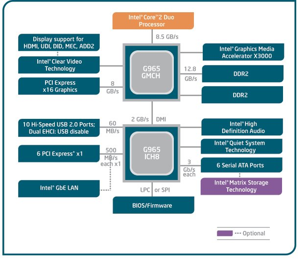
Los componentes seleccionados para un equipo de cómputo deben adaptarse a las necesidades específicas de uso. Algunas aplicaciones comunes son:
Incluye dispositivos como teclado, ratón, impresora y monitor. Estos permiten la interacción entre el usuario y la computadora, convirtiendo acciones físicas en datos digitales y mostrando resultados en pantalla.
Se refiere a discos duros, unidades SSD y memorias externas. Son esenciales para guardar programas, documentos y datos de manera permanente, asegurando que la información esté disponible cuando se necesite. La velocidad y capacidad de almacenamiento influyen directamente en el rendimiento del sistema.
Proveen energía eléctrica estable y suficiente para todos los componentes del sistema. Una fuente adecuada evita fallos, protege el hardware y asegura un funcionamiento continuo. La elección correcta depende del consumo de energía de los componentes instalados.
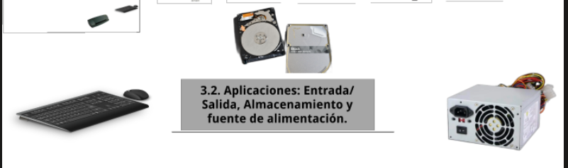
La selección de componentes también depende del entorno en el que se utilizará el equipo. Algunos ejemplos son:
Requieren equipos confiables para tareas administrativas, ofimática y gestión de datos. La prioridad es la estabilidad, seguridad y facilidad de mantenimiento. Generalmente se utilizan computadoras de gama media con buena capacidad de almacenamiento y conectividad.
Necesitan computadoras robustas para control de procesos, automatización y sistemas de producción. Se busca resistencia, rendimiento continuo y capacidad de operar en ambientes exigentes. En muchos casos se utilizan equipos especializados con sistemas de refrigeración avanzados.
Utilizan servidores optimizados para páginas web, bases de datos y seguridad en transacciones. La prioridad es la velocidad de respuesta y la protección de la información. Estos equipos requieren procesadores potentes, gran capacidad de memoria y sistemas redundantes para garantizar disponibilidad.
La computación paralela consiste en dividir un problema en múltiples tareas que se ejecutan simultáneamente en diferentes procesadores o núcleos. Esto permite acelerar el procesamiento y aprovechar mejor los recursos del sistema. Es fundamental en aplicaciones científicas, simulaciones, inteligencia artificial y grandes volúmenes de datos.
Existen diferentes formas de organizar la computación paralela según la arquitectura y el tipo de tareas:
En este modelo, varios procesadores acceden a una misma memoria central. Es más sencillo de programar porque todos los núcleos ven los mismos datos, pero puede generar problemas de sincronización y cuellos de botella.
En este modelo, cada procesador tiene su propia memoria local. Los datos se distribuyen entre los nodos y la comunicación se realiza mediante mensajes. Es más escalable que la memoria compartida, pero requiere técnicas de programación más complejas.
Algunos ejemplos prácticos de arquitecturas paralelas incluyen:
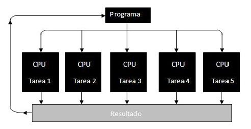